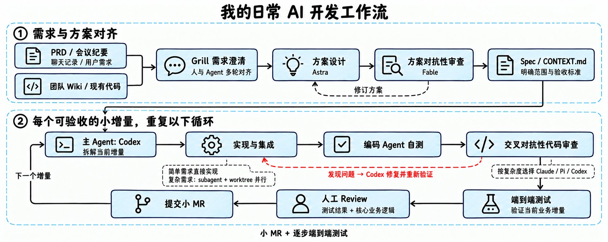
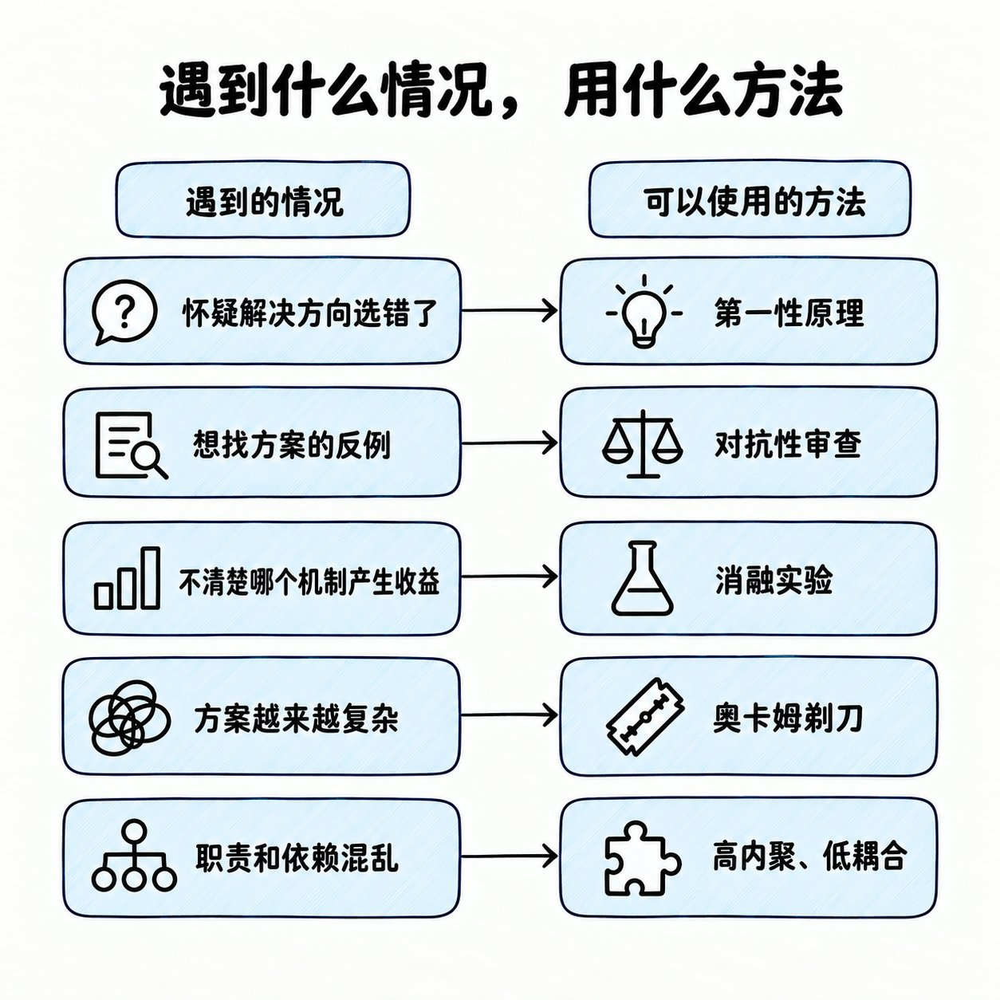
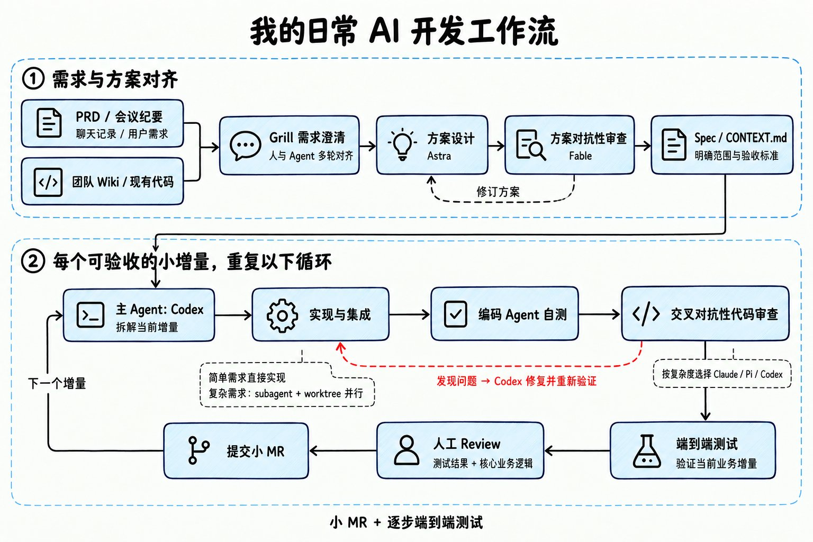
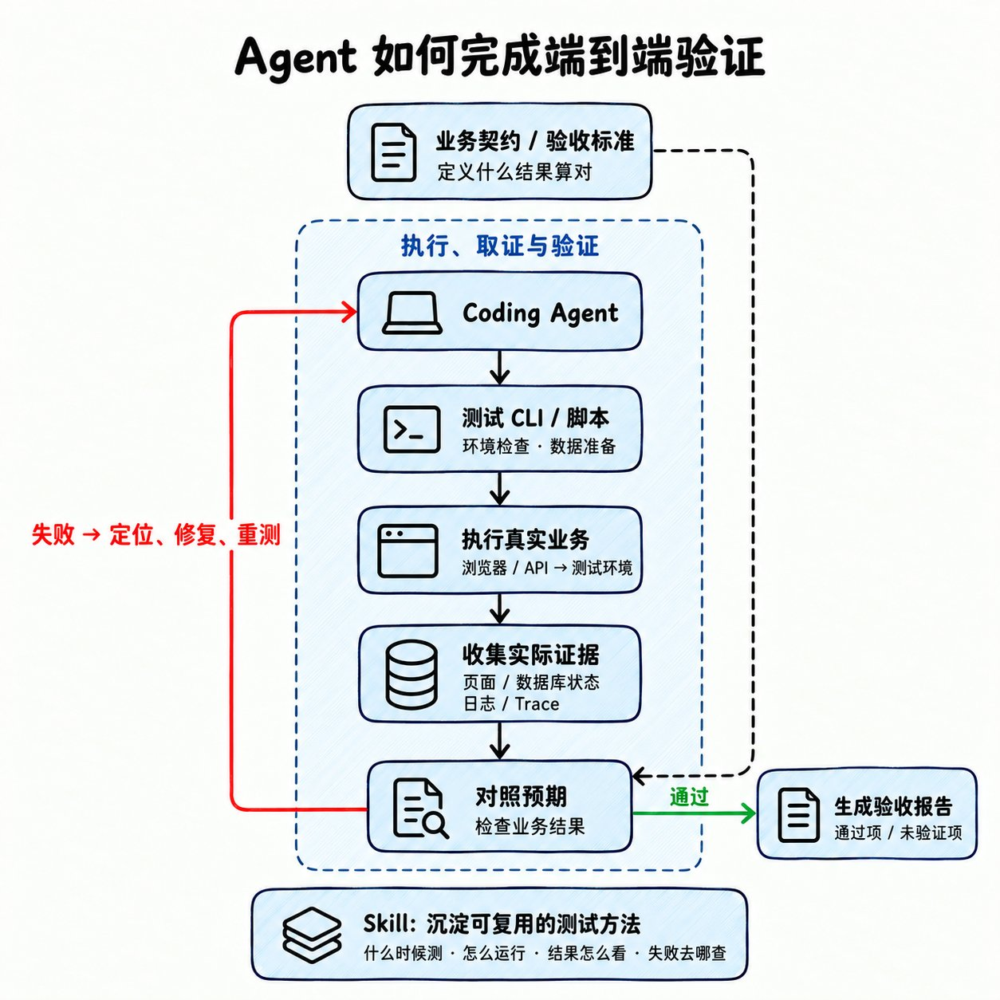

新人进大厂两个月的 AI 开发体会：少给 Agent 套固定步骤，多给它上下文、可跑的环境和评判依据
作者在组里写 Agent、兼管老的后端服务。这篇是他把自己每天怎么用 AI 干活整理出来：用哪些 Skill 和短提示词，一个需求从对齐到合入怎么走，怎样给 Agent 准备能真跑业务的测试环境，以及人怎么审 AI 产出的代码。
X 原文 作者主页 @huangtongxueh 原文约 15 分钟 · 本页导读约 20 分钟
- 原文共 4 张图；题图和第二节配图画的是同一张流程，只是版式不同。都按原样放在原位置，标「原图 1–4」。原文没有表格。
- 中间有一个工作流模拟器，最后 6 道小测，答错会带你回到对应节。

全文地图
模型变强以后，套得很死的流程反倒干扰它
写这篇的契机，是作者和直属老板聊过几次 one-on-one。老板好奇他平时怎么用 AI、个人 Harness 怎么搭、写代码的流程是什么样，因为他现在交付快、质量也好，已经在几个项目里当主 O。他目前在组里主要做 Agent 开发，同时维护原有的后端业务。
更早他在小红书讲过一版流程。那时的判断是：只要上下文准、约束合理，GPT-5.4、Opus 4.6 这一代模型就能把活干好；Harness Engineering 流行起来，也让人相信「多加约束」是驾驭强模型的办法。
Superpowers 一类的 Skill 就是这种思路的代表：分量很重，以 Spec 加 TDD 为骨架，帮人把任务组织起来一步步推进。
代价是：Token 烧得很快。这类 Skill 里写满了规定模型「下一步做什么」的固定环节；就算整体看来某一步已经多余，例如背景信息早就够、完全可以动手写了，模型也可能照着既定环节继续往下走。
新一代模型出来后，作者看到很多开发者说自己几乎不再用这种重型 Skill。一个主要原因是能力上来以后，一些原本被认为有用的约束和流程，开始变成模型的噪声。他举的例子：OpenAI 推出 Astra 时专门发了一篇博客，教大家删掉多余的 Skill 和系统提示词，让模型用起来更顺。
于是这篇就拿他近几个月的实践说话，讲目前在他手上管用的办法：怎么把各种 Agent 用好，让每天的开发更快。
不同环节交给不同的模型和 Agent
- 写代码用 Codex 跑 GPT-5.6 Sol；做规划用 Astra。Astra 上线之前，规划这块由 GPT-5.6 Sol 的 Max 档承担。
- 小需求交给 DeepSeek V4 Flash（跑在 pi 里）；给方案挑刺、审代码主要靠 Claude 5 Fable；自己的项目里，主要的方案设计会放到网页版 GPT-6 Pro 上做。
七类 Skill：对齐、澄清、实现、去过度设计、交接、审查、沉淀
- think：出自 tw93，作者拿它对齐方案、发散想法。
- grill me / grill with docs：专门澄清需求。它不停发问，逼你把目标、限制和取舍讲明白，再按流程需要写进 ADR 或 CONTEXT.md；前期没想到的坑常常靠它挖出来。
- implement：Matt Pocock 那套 Skills 里的一员，和 grill 搭配，负责把已经讲清楚的计划或 Issue 落成代码。
- ponytail：给 AI 的过度设计做减法，让后面的 Review 轻松些。作者用得很勤，原因是 GPT-5.6 Sol 常常设计过头。
- handoff：把眼下的上下文写成一个文件，换个新会话也能接着干；作者多用于从 Codex 转到 Claude Code 或 pi agent。
- check：审代码用，通常在提 MR 那一步跑。
- 自己攒的 Skill：工作和个人项目里能反复用的 SOP，像端到端测试。他的经验法则：同一个流程重复超过三次，就请 Codex 整理成 Skill，往后直接调用。
长提示词交给 Codex 起草；作者自己常用的是一句话的「方法名」
长篇提示词作者现在基本不亲手写，要用就让 Codex 代笔。比如讨论了好几轮、想把背景整体交给 GPT Pro 出方案时，他会先请 Codex 写一份完整的交接提示词。
另外他手边常备几类极短的提示词，共五类，见下一节。
作者的比喻是：一句抵得上几千句，相当于给模型按下「思维快捷键」。
他特意说明这不靠玄学：这些都是人类早已标准化的方法论，模型训练时读过海量相关论文、代码、设计文档和讨论。因此常常不用再手写几百行流程，点明「用哪种思路」就够了。下面几种是他亲测好用的。

第一性原理、对抗性审查、消融实验、奥卡姆剃刀、高内聚低耦合
1. 第一性原理
含义：不在既有方案上修修补补，而是退回去问「这件事本来该怎么解」。原文拿一个响应很慢的接口举例。
提示词的意思是：先别默认「上 Redis 缓存」，从根上分析接口为何慢，找出最小够用的解法。
这么一问，模型就不再纠结缓存怎么设计，而是先排查瓶颈：是 SQL、网络、序列化、锁竞争，还是重复计算？要是一个索引就能搞定，Redis 根本用不着。
什么时候用：当你觉得问题本身可能问歪了。
2. 对抗性审查
含义：对抗性审查，别让模型帮方案辩护，要它想法子推翻方案。
常见的问法只是「帮我看看方案有没有毛病」。作者换成下面这句：
对这个方案做一次对抗性审查，优先寻找能推翻核心假设的反例。
黄同学h对抗性审查一段
例子：用分布式锁挡重复请求。平常模型只会和你讨论锁超时设多少；切到对抗模式后，它会反问：这里真的要互斥吗？做成幂等行不行？锁服务宕了、锁到期而业务还没跑完怎么办？会不会为了一个局部问题，又多出一个分布式故障点？
作者认为它最适合两种场合：评审方案，以及做代码审查。
3. 消融实验
含义：整体变好了，不等于每一处改动都有贡献。例子：同时加索引、上 Redis 缓存、做批量查询三项，接口从 800ms 降到 100ms。
这时就请模型为这三项设计消融实验，查清收益的来源。
模型会从 Baseline 出发安排对照：只加索引、索引 + 缓存、索引 + 缓存 + 批量查询等组合，逐一比较。
结果可能是：光一个索引就把耗时从 800ms 压到 120ms，另两项复杂改动加起来只多省了 20ms。
于是你能分清哪些代码该留，哪些复杂度其实可以不要。
4. 奥卡姆剃刀
含义：效果相近时，挑前提更少、更简单的那个。例子：Agent 交来的方案里有 Kafka、Redis、分布式锁、状态机，外加定时补偿。
加一句话：拿奥卡姆剃刀再过一遍，只要需求能满足，多余的机制统统删掉。
很多时候它会得出结论：眼下只有一个库在写，用事务配一个唯一索引就够。
作者说这一招对今天的编码 Agent 格外管用，因为模型总想做得「面面俱到」，容易设计过度。
5. 高内聚、低耦合
含义：重新梳理代码的职责和边界。例子：OrderService 已经膨胀到 2000 行，就让模型按高内聚、低耦合原则审它的职责划分，并叮嘱别为拆分而拆分。
模型一般会追问：订单服务凭什么同时管库存、优惠券、短信、支付、报表？哪些是订单领域自己的事，哪些该经稳定接口交给别的模块？
作者指出，这句话唤起的不只是「把文件拆开」，而是模块化、信息隐藏、依赖方向、职责划分这一整套判断。
合起来用
因此他已经很少写「第一步……第二步……第三步……」那样的分步指令。
模型早就学过这些成熟方法，他宁可直接报方法名，把五个方法串成一句：先回到第一性原理，再对方案做对抗性审查，关键机制要用消融实验证明，设计守奥卡姆剃刀，代码守高内聚、低耦合。
照他的说法，这短短几十字布置了五个思考动作：重定义问题，攻击假设，验证每项贡献，砍掉复杂度，理清系统边界。
他眼中新模型时代提示词工程的变化：不再替模型写死整条思路，而是用准确的方法名告诉它「怎么想」，再补上这件事真正需要的约束。
问到不再显著改变方向就动手；每个小增量都过审查、端到端测试和小 MR

对齐需求
需求到手，作者先把手上的背景材料（PRD、会议纪要、聊天记录、用户反馈）一股脑交给 Agent，再借 grill 和它一起把需求对清楚。
这些材料往往不是一份完整、一致的需求，常常彼此打架：PRD 没跟上，会上又加了限制，聊天里优先级还改过；连他自己的理解里都可能夹着没讲出口的前提。
他让 Agent 参照团队 Wiki 和现有代码去读懂材料，然后一轮轮追问，把会左右实现的目标、边界和取舍问清楚。能当场答的他就答，答不了的回头去问产品或相关同事。
何时停：剩下的疑问已经不会显著改变实现方向和验收结果，就开工。
他不要求 Agent 事先把实现细节全部想好，不然「对齐」本身又成了一套笨重的流程。
对齐的结论写进 Spec 或 CONTEXT.md：记下要解决什么、范围多大、做了哪些关键决定、怎么验收。后面写代码和审代码的 Agent 都读这一份，不必再翻完之前所有对话。
实现、审查、交付
方案敲定后，交给主 Agent 按复杂度安排：简单需求直接写；复杂需求切成边界清晰、各自能独立验收的 Issue。只有真能独立推进的部分，才分给 subagent 在各自的 worktree 里并行做，最后由主 Agent 合起来。
写代码的 Agent 自己先把测试跑完；等它觉得能交了，作者再视复杂度请别的 Agent 来交叉挑刺。挑出来的问题一律回给主力 Codex，由它改完再验。
在作者本人动手审之前，还要先过一遍端到端测试。
生成的代码他现在并不逐行读，重点看测试结果和核心业务逻辑。能这么做有个关键前提：每个 MR 都切得够小，而且开发过程中一步步把完整业务路径验过。
MR 小，每次要看懂、要判断的改动就有限；端到端测试则检验这些改动放进真实业务流里站不站得住。人工审时，他主要确认业务逻辑对不对，以及手上的测试结果够不够支撑这次上线。
一个增量怎么走完全程：对齐、实现、审查、端到端测试、小 MR
补充：正常路径照原文第二节及配图；三个失败分支是学习搭子串起来的教学示例（分布式锁例子取自原文），不是原文的真实事故。
让 Agent 从真实入口跑到结果、自己取证；但「什么算对」由业务契约定
如今 AI 写测试很在行，修个 Bug 动辄附上几百行用例（作者点名 5.6 sol 尤甚）。测试多不是坏事，可上线以后照样冒出意料之外的错。
在他看来症结是：Agent 手里没有端到端的测试环境，也就没机会在写代码、自测那一步把这类问题揪出来。
要是这套环境搭起来，Agent 可以顺手从测试环境的真实入口发起操作，一路检查到用户要的结果，那么让 AI 写的代码进真实系统，心里就踏实多了。
他已经给自己负责的业务搭好了这样一套开发测试环境：Agent 查库表、查日志都很方便，还能登上机器排查。
搭的过程，说白了是让 Agent 把他平时自测的套路提炼出来，把零散的工具整合到一起：能做成工具的就封成 MCP 或 CLI，能复用的流程就写成 Skill。
起步确实要投入，但作者劝大家别嫌麻烦：搭好以后开发明显提速，返工和线上故障都少了，也不必天天提心吊胆怕 AI 的代码闯祸。

为了让端到端测试对 Agent 友好，他主要做了四件事：
- 让 Agent 认识环境：一条命令拉起测试环境、造好数据；讲明白当前是哪个版本、用哪个测试账号、有什么权限；还要能清理和复位。
- 让 Agent 能动手操作：借浏览器、API 或 CLI 走一遍真实的业务流程。
- 让 Agent 好查数据和日志：只读的数据库 MCP 用来核对落库结果；日志系统的 Skill 加上 Trace，用来看链路状态、找问题。
- 把稳定的杂活复用起来：固定操作写成脚本，入口和排障办法写成 Skill，少些人工插手和来回对话。
以此为基础，他再分享了四条眼下觉得有效的做法：
- 浏览器自动化：需要点浏览器的业务，他推荐开源的 ego lite，好用且快；配上 pi agent 跑 DeepSeek V4 Flash，测试能更快跑完。
- 统一成一个 CLI：把可复用的 Skill、配好的 MCP、写好的脚本收进同一个测试命令行，覆盖查环境、备数据、跑场景、查结果、做清理；这本身也能当团队内部的提效工具，他平时排障也靠它。
- 工具为验收服务：查库是为确认状态，日志和 Trace 是为解释失败；但「应该得到什么」只能来自业务契约，不能 Agent 看见系统吐出什么就当它是对的。业务一复杂，系统完全可能给出一个看着合理、实际违背需求的结果。工具负责取证，不负责定义标准答案。
- 被测的本身就是 Agent 时：流程走通之外还得看回答质量，即通常说的 Agent Eval；原文点到为止。
先对验收标准和测试结果，再顺着业务路径盯高风险的地方
前面讲的是怎么让 AI 产出好代码；可归根结底，对业务需求负第一责任的还是开发者本人。
不审，大系统里很容易出问题。作者说：谁也不想半夜被叫起来 On-call，查到最后发现是 AI 的代码惹的祸。
他现在审代码有四条做法：
- 先对验收标准，再看测试结果：先检查 Agent 列出的验收标准，再拿端到端测试结果去对，看是否达标、有无遗漏。光数通过了几条不够，要看这些测试有没有测到需求真正在意的东西。
- 顺着业务路径读实现，力气花在高风险处：权限、状态流转、并发、重试、数据一致性，还有迁移和回滚，都是重点。套路固定的 CRUD 可以少看，作者说这部分他如今已经不看了。
- 单独审新加的抽象和机制：按奥卡姆剃刀的思路请 AI 再过一遍——真需要吗？有没有更简单的写法？是不是为一个局部问题搬来了太多复杂度？
- MR 多就考虑做个 Review Bot：让它负责交叉审查。它不同于直接喊 pi agent 或 Claude Code 来挑刺，重点是把 Git 里的改动信息和事先设计好的审查步骤绑在一起，变成能反复跑、专为 MR 服务的审查能力。
瓶颈是人的审查速度；工作流要定期做减法
作者坦言，眼下最卡他的是审代码的速度。
Agent 能几条线并行推进，可他吃透业务、判断方案、确认能否交付的速度并不会翻倍。只顾让 Agent 多写，结果多半是待审代码越堆越多。
所以他打算改进的方向，是让反复出现的问题在送到他面前之前就被找出来、修掉。这是他的下一步计划，还不是已经做到的事。
凡是类型检查、测试、业务断言能抓到的问题，尽量让 Agent 在开发途中自己解决；真正要他拍板的，收拢到三件事：需求有没有理解对、核心业务逻辑成不成立、这次改动还剩哪些风险没验证。
Review Bot 能在这上面帮忙，但衡量它要看是否少漏了真问题、是否减轻了人的负担，而不是看它留了多少条评论。
这些经历也让作者把 Harness 想得更具体：除了喂给 Agent 对的上下文，还得给它一个能真正执行任务的环境，以及评判结果对错的依据。
他把自测中反复做的操作沉淀成 CLI、脚本和 Skill，让 Agent 可以自己运行系统、检查结果、找到失败证据；以后碰到同类任务可以接着用，也能慢慢交给组里其他人。
与此同时，这套流程也得隔段时间瘦一次身。有的环节只是在补某一代模型的短板，模型换代后就要重新评估它还值不值：简单任务直接做，复杂任务再加规划、拆分和交叉审查。比如 Astra 更新后，他就从 AGENTS.md 里删掉了几条过严的约束。模型在变，流程也得跟着变。
作者也说了局限：测试和审查能压低不确定性，但验收标准仍得由人来给对。代码和测试彼此吻合，也可能是两者一起理解错了需求；端到端测试只管得到选定的环境和场景，线上的流量、并发、数据分布仍可能冒出新问题。
作为工作没多久的新人，他很想在岗位上多积累专业知识；可 AI 也拿走了一部分亲身踩坑的机会。有些原本需要经历问题、排查原因才能换来的宝贵经验，现在可能只剩 AI 一句「我错了，现在修改一下」。
因此他每天会从开发时间里抽一块出来学习和复盘，也在想：AI 时代，做研发的人到底需要什么能力。
他说这篇记的是入职这几个月在自己业务上慢慢试出来的做法，适用边界和缺点他还在摸索。
给读者的起步建议：从你最常走的那条自测路径开始，让 Agent 独立跑通、保留证据，再把好用的步骤固化下来。
因为公司保密，很多细节文中没法讲；作者说权当抛砖引玉，也想听听大家在实际开发里的好办法。